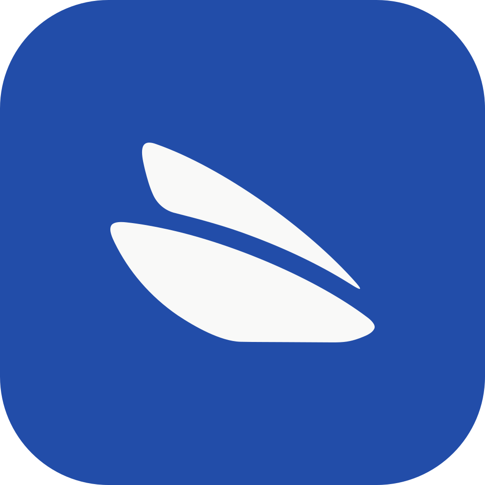

Cumplimiento legal ·
España
compliance
-es
Audita tu app y deja listos tus documentos de cumplimiento.
Cada hallazgo apunta al artículo de la norma que lo respalda — sin abogado.
Un plugin de
BeeL.
para Claude Code · github.com/beel-es/claude-plugins